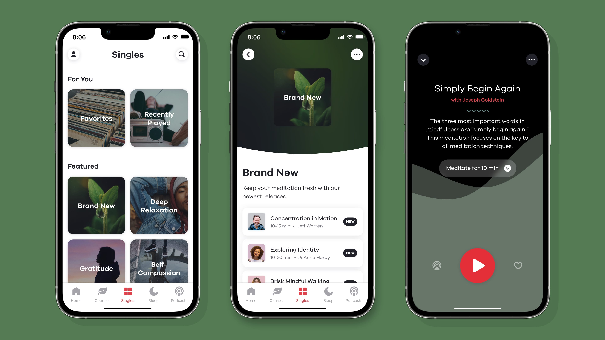
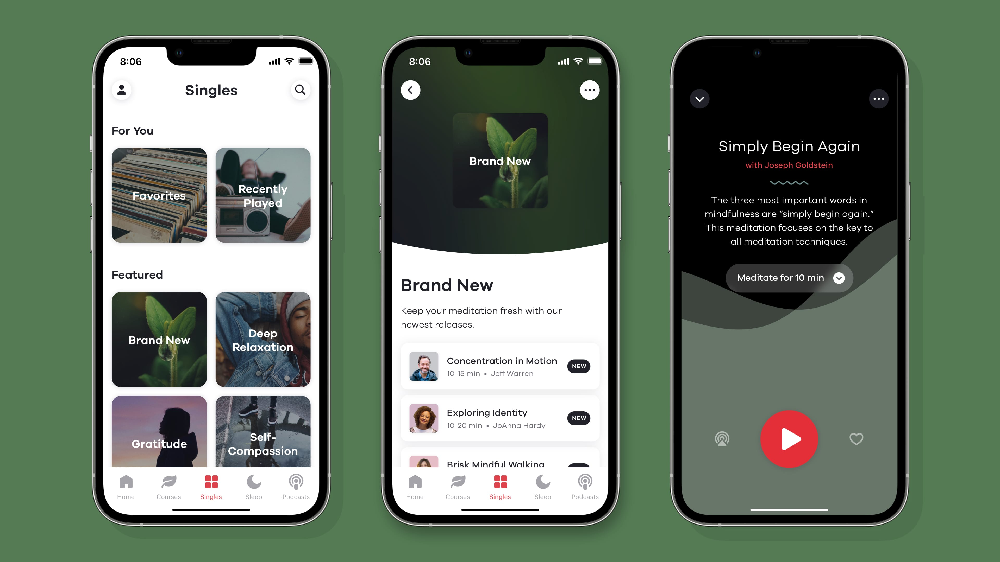

Jeremy Borthwick
portfolio of ui, ux and other fine acronyms
I lead product design for big brands like MINI and Harvard, and tiny startups like Ten Percent Happier and Mapkin. I grew up in the swamps of Florida before escaping to the blizzards of Boston, but maintain a healthy fear of snakes.
Check out my résumé here.
Ten Percent Happier
I joined 10% early, as one of ten full-time employees and led their product design for 5 years, helping grow membership levels from 5,000 to well over 100,000 subscribers.
Anchored by journalist Dan Harris’ own begrudging journey into mindfulness, Ten Percent Happier wanted to create a meditation app that felt more down-to-earth than the often highly-aspirational competitors.
 

Throughout this time I collaborated on product strategy and vision with the founders and eventual PMs. Ten Percent Happier was featured by Apple numerous times as App of the Day, Trending App of the Year, and powers Apple’s internal wellness challenge each year.
I also helped lead creative direction for our suite of podcast experiments like More than a Feeling, and Childproof, along with video courses like The Dalai Lama's Guide to Happiness
It was incredibly fulfilling to collaborate across our teams to ensure that each felt properly unique, celebrated the spirit of the project, fit into the 10% universe, and resonated with our intended audience.
Mapkin
In May 2016, Mapkin was acquired by MapQuest.
Mapkin was the first friendly GPS app, incorporating safe, driver-first design and UX along with voice guidance that leveraged an array of open data sets and crowdsourced tips. I led product design and wrote KITT, the core navigation rule-set that lets Mapkin say things like:
- “Take a left at the light onto Main Street, just past the gas station.”
- “Let's head over the bridge and then take our first right.”
- “We’ll follow this for about 2 miles and then hop onto I-93 South.”
At launch, Mapkin was immediately featured by Apple. Within months, drivers were clocking in millions of miles.
With an incredibly small team, we built a nation-wide GPS app with intuitive turn-by-turn directions based on analyzing OSM map data, on-the-ground seeding efforts and tips from Mapkin users. Not a small effort by any means. We incorporated visual landmarks, local tips, lane guidance, warnings about tricky intersections, friendly reminders, and more.

On top of that, we gave it an incredibly simple interface, designed to get you going fast while always remaining safe and easy to use on the road.

Since the focus of Mapkin was voice guidance, an initial priority was to create a rules engine that was powerful enough to always give the best direction given all the available facts. However, we also wanted to keep things simple and flexible enough that product design could lead the effort instead of engineering. Thus, KITTscript was born, a concotion of python wrapped in YAML that leveraged data from a variety of sources to create personalized narration for every route.

Anothe big effort was creating a simple way for users to share local tips with other drivers. We designed an eyes-free method of sending voice notes. While navigating, a driver could press and hold anywhere on the screen and start speaking, release and the recording would be sent. Afterward, our team would add the tip to our custom data layer and KITTScript would weave the info into voice guidance for everyone.
MapQuest
After being acquired in May 2016, the Mapkin team tackled an array of initiatives at MapQuest, including new mobile prototypes and building a ground-up, high-quality, mobile SDK powered by the core ideals that drove Mapkin.
Harvard Magazine
Harvard Magazine was hunting for a web app with a print vibe. I led wireframing, prototyping, user-testing, and design with a focus on making readers happy.

The digital edition includes crisp layouts, personal read-later lists, robust offline support and a recommendation engine, all while ensuring casual readers could just lay back and leisurely flip through an issue.

MINI
For their flagship Manhattan store, MINI wanted to provide a personal, hassle-free way to shop. I led the UX for an iPad app that allowed shoppers to explore MINI's rich history, browse model features and, most importantly, configure their ideal MINI, all without having to talk to a dealer.

I also oversaw the custom crafting of matching, super-thin, anondized alumninum cases.


CS MONITOR
One of the most highly respected and misunderstood news agencies around, the Monitor offers award-winning, secular, news coverage and their aging site was doing them a huge disservice. While a responsive design wasn't possible given project constraints, the Monitor sought a modern design which showcased their coverage's fantastic depth and global reach.

I led reader testing and design and the refresh is now being built by the Monitor.
FRANCISCAN
Franciscan deserved a site that showcased their dedication, passion and unrivaled breadth in serving the physical, mental and educational needs of a diverse community of kids. I led UX and design for a new site weaving together rich photography with real, compelling success stories, and a more inviting brand refresh.
SAUCONY
Saucony wanted to prove their commitment to people's long-term health, thus RUN4GOOD was born, allowing runners to fight childhood obsesity with every mile under foot.

I devised the original concept and led wireframing, prototyping, and design of a unique, full-featured, running app that combines personal milestones with collaborative mileage goals that trigger corporate donations.
After launch, runners clocked in over 300,000 miles, helping raise over $300,000 for charity.
KILL SCREEN
Dedicated to the news & art of games & play, Kill Screen wanted to break from the rowdy, male-centric design of most game sites of the time. I led the design of Killscreendaily.com over the last two years, catering to their evolving, feature-driven editorial voice.
I also hand-crafted eBooks of their quarterly print journal, maintaining as much of the rich design as possible while supporting a wide range of ePub & MOBI readers.